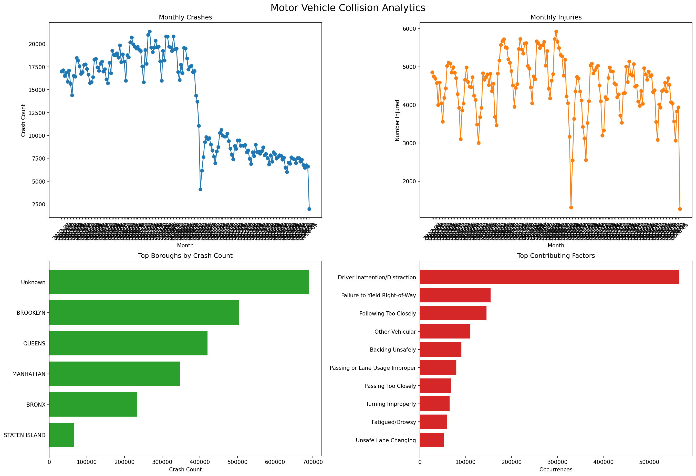

—
Total crashes
NYC Crash Analytics
Interactive analytics for the NYC motor vehicle collisions dataset.
Total crashes
Total injured
Total killed
Top borough
Top contributing factor

The graph image is generated from the CSV dataset and served from the same dashboard folder.